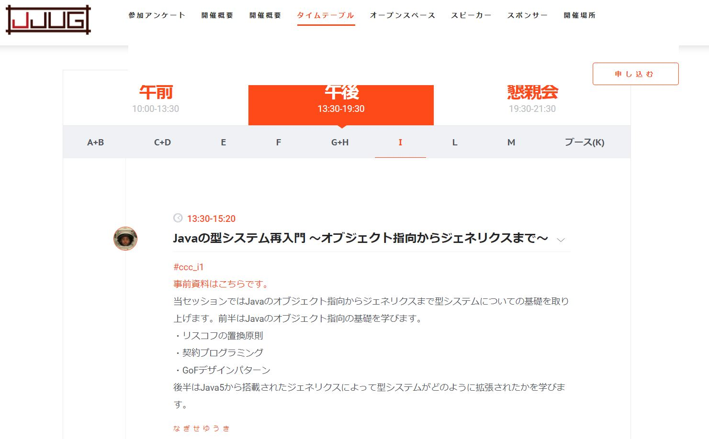

「ジェネリクス勉強会」の名古屋サテライトに行ってきた
6月23日(土)に東京のドワンゴさんで「ジェネリクス勉強会」がありました． 流石に，名古屋から東京にはおいそれといけないが，この勉強会をニコ生で配信してくれるそうで，それを来栖川電算でサテライト放映してくれた．
なので，行ってきました．
ジェネリクス勉強会
ココでのジェネリクスは Java の総称性(パラメトリック多相)を指している． とボクも最初は思っていた(だって名古屋サテライトの主催が なごやかJava だったからサ)．
ふたを開けてみると，多相性の話ならなんでもいいらしい(?)．
実際，取り扱われた話題は，Java や Xamarin(C#)，Scala のジェネリクスや，存在型や Type member などがあった．
ちなみに，この勉強会に関するツイートをまとめてくれてた． トレンド入りしたおかげで，無関係なツイートもあったのにすごい．
ちなみに
最後なんかに TaPL の知識はベースとして必要か，などとあったが，ぼくの場合いくつかの章は読んだことある程度で真面目には読み切れてない．
題目
あとで自分で参照しやすいように半分メモのつもりでひとつひとつ残しておく．
ちなみに，connpass の目次には，トップバッターがなぎせさんで，二番手がκeenさんとあるが，40分ぐらい機材トラブルでてんやわんやして，サテライトのなぎせさんと現地の κeen さんを入れ替えてスタートした．
ジェネリクス ディスパッチ 表裏
発表者は κeen さん(関数型について調べると見かける)． スライドはコチラにあった． また，補足ということで記事を挙げていた．
内容は大きく分けて2つ，前半が Rust と Java を例にした，各々のジェネリックス(パラメトリック多相)の話で，後半はジェネリックスの双対(裏)ということで存在型の話だった． 前半の話は単純にジェネリックスの使い方とかそういうレベルではなくて，裏側でどう動いてるかを話してくれた．
前半はさらに3つの話題
- ジェネリクスの2つの実装方式: ポインタ方式(Java)とテンプレート方式(Rust)
- 便宜上の名前らしい
- ジェネリクスに制約を付けるためにディスパッチ
- 制約ってのは雑に言うとジェネリクスの型変数が，とある関数を持つかどうか
- Java ではインターフェース，Rust ではトレイトで実現されてる
- 話してくれたのは，その裏側の動的・静的ディスパッチ
- どうやって，とある関数の実装を切り替えてるか
- Java と Rust の固有のジェネリクスに関する問題
- Java はプリミティブ型のボクシングに関する問題
- Rust はヘテロな型を使えない問題
- 動的型付け言語でよくある
[1, "abc", 0.3]のようなことが出来ないという意味 - これは Java を含む大抵の静的型付け言語で起きうるのでは？
- 一回ラップしてしまえば解決だけども…
- 動的型付け言語でよくある
後半の存在型は，正直ユースケースはよくわからなかった． 存在型そのものについては何となくわかる． スライドにもあった通り，ある型を継承してる型かとか，あるメソッドが定義されてる型かとかの条件(述語)を満たす型のこと．
よくある例はヘテロリストとかなんだが，これはあくまでも存在型 + 高階多相なので，高階多相が無い(？) Rust では関係ないのだろう(たぶん)． 以下は Haskeller なら一度は目を通したことがある存在型に関する記事．
ちなみに，存在型は TaPL の24章で紹介されており，そこでは ML 系のモジュールっぽいものが具体例で挙げられてる(気がする)．
あと，Rust では 絶対動的ディスパッチをしたくない というを心に刻んだ．
Javaのジェネリクス概要と限界
発表者はなぎせさん． 富山からサテライトにて．
発表資料は探しても見つからなかった．
内容は2部構成(？)だった． 前半は「ジェネリクスプログラミングとはなにか」というモノ． きっと，トップバッター だった ので，導入的な内容にしてくれたのだろう． 後半は JJUG-CCC 2016 Fall でのスライドを用いて(時間の許す限り)掻い摘んでイロイロと話してくれた．

サンプルコードなどが置いてある GitHub リポジトリなら見つけた．
前半・後半通してあがったキーワードとして「リスコフの置換原則」があった． ざっくり言うと，(OOP の継承に置いて)子オブジェクトは親オブジェクトが満たす性質を全て満たさないとダメ，というモノである．
問題として挙げたのが，Java の配列．
Parent[] a = new Parent[]{};
Child[] b = new Child[]{};
a = b;
a[0] = new Parent();Java の配列は共変(covariant)なため，これはコンパイルエラーにはならない(共変性とは子型のオブジェクトを親型の変数に代入できるという性質． しかし，a[0] = new Parent(); で，ArrayStoreException という実行時エラーになる． この振る舞いはリスコフの置換原則を完全に破っている．
ジェネリクスは不変なため，上記のようなコードはコンパイルエラーになる． そのため，ジェネリクスが導入された JDK5 より前は NullPointErexception と同じぐらいよくある実行時エラーだったらしい．
他には以下の内容の話があった(他にもあったかも)
- immutable なモノを mutable にしてしまうリスコフの置換原則のアンチパターン
- 契約プログラミング(Design by Contract, DbC とも言う)について
- 関数やメソッド(に限らずかな？)において事前条件，事後条件，不変条件 を明示する手法(？)
- ダウンキャストをしない
- 変性: 共変，反変，不変について(軽く)
- 変性については TaPL の 15.2 節にある
- なぎせさんのこの記事でされてた話題
- Javaジェネリクスにはダイヤモンド演算子(
<>)が3種類ある- 型変数の宣言，型変数のバインド，パラメータ化された型
- 型推論はJavaにもある(変数の型の推論だけが型推論ではない)
- PECS(Producer extends and Consumer super) の話
? super Tとか? extends Tとか
- Javaジェネリクスにはダイヤモンド演算子(
リスコフの置換原則と契約プログラミングについての具体的な話は以下の論文でされてるらしい．
ちなみに，いらすとやからっぽい挿絵がいちいち面白かった(笑)
拡張可能レコードの恩恵
発表者はfumievalさん．
まさかの Haskell の話．
資料は Web 上を探しても見つからなかったが，Haskell-JP の slack で頼んだら Slack 上にはあげてくれた． なので，どうしても見たい人は slack に join して．
内容は fumieval さんが作成した extensible パッケージについて． ジェネリクスはどこに行ったかというと…
- Haskell(正確にはGHC) にも Generics という名前のモノはある
- これを用いると Generics 型クラスのインスタンスにした型は，簡単に特定の型クラスのインスタンスにできるようになる．
- しかし，これは中々手間
- そこで拡張可能レコードを導入する事で簡単に出来るようになる
という感じ(だったはず)．
GHC.Generics はともかく，拡張可能レコードについては，fumieval さんのサイトで説明されている．
リアルワールドなHaskellerは、幾十ものフィールドを持つ大きなレコードをしばしば扱う羽目になる。 … しかし、
<-の右辺が大きい、フィールドの数が多い、といったリアルワールドにありがちな事象が掛け算されれば、定義は巨大になってしまう。
本当にその通りで，ぼくのバイト先でもCSVのようなデータを型付けて扱ってるのだが，10個以上のフィールドを持つレコード型(OOPで言えばクラスも同様だと思う)とかに，一元の処理(例えば，toString や show のような処理)をしたいときに，めんどくさすぎる． このレコード型に map みたいなことが出来れば楽なのにと．
で，そのために，型レベルリストを使ってレコード型(のようなもの)を構築することで，map とかを可能にする(って感じだと思う)．
ちなみに，型レベルリストって何かと言うと，型レベル自然数のリスト版である． 型レベル自然数は検索すると割と出てくるだろう．
例えば，型レベル自然数を使うと何行何列なのかが型に埋め込まれた，型安全な行列を作ることが出来る． 以下の記事で紹介されている．
じゃぁ型自然数はどうやって表現しているかというと
data Nat = Z | S Natという感じの型を作ってあげて，これを型の型(型族)に昇格してあげる．
OOPではほとんど聞かないけど，型にも型のようなものはあって，それを種(kind)と呼んでいる． 何も指定しない場合は，* というのが使われる． Int や Char の種は *，リスト [] や Maybe (Optional) は * -> *，タプル (,) は * - > * -> * という風になっている．
この * の部分を任意の種にできる． 例えば，長さ付きリストは
{-# LANGUAGE GATDs DataKinds #-}
data Vec :: * -> Nat -> * where
Nil :: Vec a Z
Cons :: a -> Vec a n -> Vec a (S n)と書ける． これを用いて型安全 head が書ける．
head :: Vec a (S n) -> ahead Nil とするとコンパイルエラーになる．
- 参照 : 7.9. データ型の昇格
型レベルリストの場合は簡単にタプルのようなものを作れる． '[Int, Double, Char] が (Int, (Double, Char)) のような感じ． extensible ではこれを利用して，data 宣言の直積と直和を表現したって感じだ． で，それに map は zip を定義したそうだ．
実はいちど extensible を使おうとしたのだが，ドキュメント少なくて(当時は)怖くてやめてしまった． が，ドキュメントを充実してくれるらしいので，手を出してみようかな．
あと，イラレスライドはいつものことらしい(笑)
generics on Xamarin products
発表者はatsushienoさん． Mono の中の人らしい(GitHub の mono org にいる)．
スライドはココ．
内容は Xamarin もとい，Mono におけるジェネリクスの話． C# ではなくて Mono なのは，話の内容が，κeen さんみたいに処理系の中身(裏？)の話だからかな．
解説記事が上がってた． ので，これ以上何も書く必要は無いか．
ちなみに，Javaジェネリクスの問題(ボクシング？)を解決しようとしているプロジェクト，Valhallaと同じようなことを Mono では既にやっていて，今回はそれで更に生じた問題に対処してる話もあり，Javaの人は良く聞いといてとか言ってた(笑)
あと，Xamarin だけやってるやつはニワカらしい(笑)
黒魔術 Genericsを用いて入れ子構造と継承に溢れた楽しいFluent APIを作りましょう
発表者はHaochenくん． 名古屋からサテライトにて．
スライドはココ(そのうちリンクが切れるかもと言っている) 切れました．
内容は，Javaジェネリクスを利用して Fluent Style の API を実装数るためのパターンを考えました，という話．
Fluent Style とは，以下のような，あるオブジェクトの状態変化をドット記法で数珠つなぎ(メソッドチェーン)にしていきながらプログラムを構成していくスタイルのコトだと思う．
CanvasObj obj = Graphics.builder()
.newGroup()
.newCircle().x(10).y(10).radius(20).circle()
.newText().text("Hello").text()
.end()
.newGroup().rotation(90)
.newCircle().x(10).y(20).radius(20).circle()
.newText()
.text("world")
.font().style(Font.FontStyle.BOLD).font()
.text()
.end()
.build();なぜ，コレがうれしいのかというと
- fluent style
f().g().h()は，よくある sequential stylef(); g(); h()より読みやすい - さらに，型検査を行えるので安全
とのこと
ちなみに，今回の発表のパターンに関することはオリジナルらしく，Harvester Pattern などは 検索しても恐らく出てこないだろう．
スライドにちょこちょこ出てくる実装が完全ではない． Webを探しても完全な実装が見当たらなかったので，頑張って自分で書いてみた(Gist)． 一応動作する． (4時間ぐらいかかった…orz)
キモはいくつかあるようだが，面白いと感じたのは再帰ジェネリクスのところ
abstract class CanvasObjBuilder<StateT extends CanvasObj, Self extends CanvasObjBuilder<StateT, Self>> {
Self x(double x) {
return self(obj -> obj.setX(x));
}
Self y(double y) {
return self(obj -> obj.setY(y));
}
abstract StateT getState();
@SuppressWarnings("unchecked") // black magic! XD
Self self(Consumer<StateT> action) {
action.accept(getState());
return (Self)this;
}
}Self extends CanvasObjBuilder<StateT, Self> が再帰ジェネリクス． Java でもこういうことが出来るとは知らなかった．
ちなみに，表題の 黒魔術 は @SuppressWarnings("unchecked") のことを指しているそうだ． 詳しくは全然わからないが，コレが無いとコンパイルエラーになるらしい．
冒頭で
- Java Type System is Turing Complete
- Java Type System is Unsafe !!
と言っていた(笑) それぞれ論文で証明されているらしい．
- Java generics are turing complete. Radu Grigore. 2017.
- Java and scala’s type systems are unsound: the existential crisis of null pointers. Nada Amin and Ross Tate. 2016.
型システムがチューリング完全であるということは型検査で無限ループを作れるらしい． また，型システムが安全でないということは任意の型に型をキャストできるらしい(ダウンキャストなしに)．
抽象型メンバーとジェネリクスのカンケイ in Scala
発表者はkmizuさん．
発表資料はココ． (発表時は Int が String になってたけど直ってる(笑))
内容は Scala で抽象型メンバーを使ってジェネリックスを表現するという話．
Scala の抽象型メンバー
trait Parsers {
type Element // <--- コレ
type Input = Reader[Element] // <--- コレ
abstract class Parser[T] extends (Input => ParseResult[T]) {
def apply(in: Input): ParseResult[T]
}
}だそうです． 抽象型(実装の無い型)をトレイトのメンバーとして取れるという機能ですかね．
今回はジェネリクスを表現するために使うが
- クラスのグループを一つの型で扱う
- 型パラメーターを取って別の型とするのではなく，フィールドのように型を持つ
- ML系のモジュール
にも使えるらしい．
何人の方もツイートしていたが，Haskell の type family に似ている．
前半は例として不変な Cell や共変な Cell，高階関数なんかを抽象型メンバーで表現していた．
後半(本番)は高階多相をエミュレートしていた．
trait Functor[T[_]] {
def map[A, B](container: T[A])(f: A => B): T[B]
}を，こういう感じにしてた．
ジェネリクスよりかなり膨大なコードになってしまうが，すごい．
ちなみに，これにいったいどんなメリットがあるかという問いに対して
- 理論的基盤がシンプルになる
- 実装を抽象型メンバーのみで済ませられる
- 趣味
だそうです(笑)．
おしまい
とても面白かったですね． こういう言語に共通するテーマでの勉強会はイロンな話聞けて楽しい．
ちなみに，これ書くのすげー時間かかった… 半分以上付け焼刃なんで，間違ってたらごめんなさい．